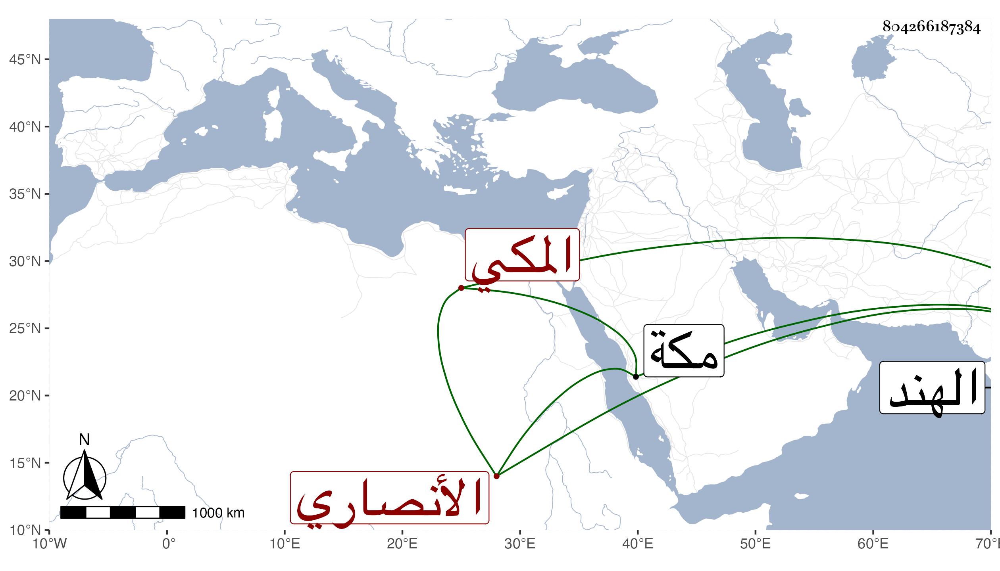

0902Sakhawi.DawLamic.ITO20230111-ara1.EIS1600.804266187384
Biography ID: 804266187384
أحمد بن عبد الرحمن بن محمد بن أبي بكر بن علي بن يوسف الشهاب بن الوجيه الأنصاري المكي الآتي أبوه ويعرف كهو بابن الجمال المصري . حفظ القرآن وجوده على الزين بن عباش وأحضر في الثالثة سنة ثلاث عشرة ثم في الرابعة على الزين المراغي في مسلم وابن حبان ، ودخل الهند وقطنها وقتا واستولد بها أولادا ورجع بهم إلى مكة ثم عاد إليها فكانت المنية سنة ثلاث وسبعين عفا الله عنه .
